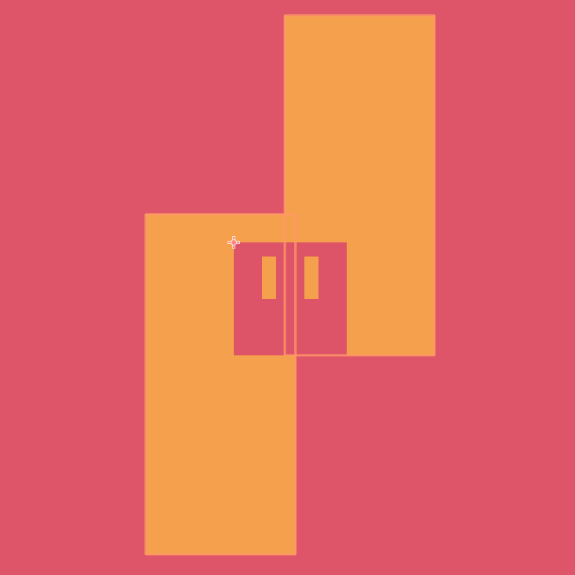

Decided to set up a page for myself! Keeping it simple for now.
I'm just an average Finnish dude who likes programming & playing video games.
I do have some released games, but below you can find more examples of my work.
Seamless is a minimalistic 2D puzzle-platformer where different coloured boxes form the enviroment.
I wrote a custom collision system to handle these collisions.
There are 2 types of colliders: Holes & Boxes. Holes define the inbounds space. The player has to be enclosed by the inbounds space every tick; if they aren't, they are pushed back inside. This sounds relatively simple, until you consider that you don't necessarily have to be enclosed by any single hole to be inbounds.
The collision detection is discrete, but the physics ticks are split into multiple sub-ticks if the relative speed between the player and the enviroment is too large. This collision system will handle basically anything you can think of to throw at it, and come out looking good.
However, there is one big limitation. Every collider in Seamless has to be an axis-alinged rectangle. I have thought about expanding or even re-writing the system to support polygons, but it's not worth the time investment and added complexity. Maybe in the future.
However, even with the enviroment being all rectangles, you can make some pretty interesting levels.
Play Abyss Trail
Abyss trail was my submission to the 7th Brackeys game jam. It placed #234 out of 1606 total entries overall.
I had entered one jam before, but didn't manage to finish in time. With Abyss Trail, I really focused on keeping the scope under control. The game turned out quite simple, but I was happy with it.
The music was composed by MaximusCXI.
You've found the end of the page! I'll be writing more here when I have the energy. For now, go do something else. Shush.